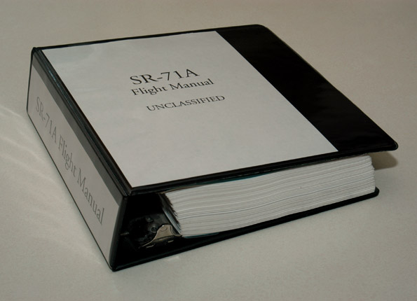

About This Project
The SR-71A Flight Manual that was used to create this online reproduction is a first-hand copy of an actual ISSUE E, CHANGE 2 Flight Manual. Since it is in binder form, it is easily scanned; each page may be removed individually. This copy was printed on standard 8.5" by 11" printer and photocopier paper. The online edition was scanned at 1000 x 1400 resolution.
The manual was acquired on 18 June 2001. The online release of the Flight Manual (except Appendix 1) to the public was on 18 July 2001. The manual was finished in its entirety on 2 March 2002. In November 2005, the entire manual was upgraded to valid XHTML 1.0 Strict.
It took roughly five minutes to prepare each page of the flight manual for online viewing. This procedure included scanning at 300 DPI, resizing, rotating (if crooked), removing blemishes, saving as a bitmap, converting to GIF, and then preparing each HTML page. Considering the flight manual is about 1,000 pages, you can do the math. SR-71 Online takes credit for this reproduction and asserts distribution rights. If you would like to mirror this site, please contact me.
In early 2006, I made several optimizations to this section of the web site, including XHTML and CSS validation, as well as converting the entire manual to PNG format. Hopefully this section will be maintenance-free for the next several years.
